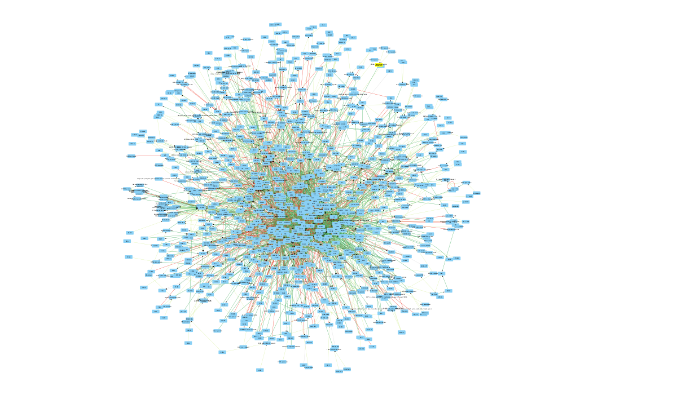

Get prior knowledge network
Table of Contents
1. About
This work is a part of the ParkinsonPathAI project. The code described here is part 1 of the work.
2. TODO RAS MAPK pathway
In this work we are intrested in the interplay between the RAAS and MAPK pathways because..
I obtained two lists of genes from the two pathways from a collegue.
In order to get a full list of genes that we are intreseted in and their interactions, we augment our intital list and query pathway commons to obtain a network of genes. We use the pyBravo tool to make this query.
The intial list is :
2.1. Raas genes:
cat ../../data/initial_gene_list_files/raas_genes.txt
ACE ADCY AGTR1 AGTR2 AGT ATF2 CCL2 CCL5 DAG1 ELK1 ERK1 ERK2 FOS GNAQ GRB2 IP3 JAK2 JNK JUN MAP2K1 MAP2K2 MAP2K4 MAP3K1 NFKB1 NO NOX1 MAPK PAK PGE2 PI3K PIP2 PKA PKC PLCG1 PTGER2 PTK2 PTK2B PTPN6 RAC1 RAF1 HRAS KRAS REN SHC1 SOS1 STAT1 STAT3 TNF
2.2. Dopamine KEGG pathway:
cat ../../data/initial_gene_list_files/DopamineKEGGpathway.txt
AKT3 CREB3 GNB5 ADCY5 COMT CREB1 ATF2 ATF6B MAPK14 CREB3L4 CALML6 DDC DRD1 DRD2 DRD3 DRD4 DRD5 AKT1 AKT2 LRTOMT PLCB1 FOS GNAI1 GNAI2 GNAI3 GNAL GNAQ GNAO1 GNAS GNB1 GNB2 GNB3 GNG3 GNG4 GNG5 GNG7 GNG10 GNG11 GNGT1 GNGT2 PPP2R3B GRIA1 GRIA2 GRIA3 GRIA4 GRIN2A GRIN2B GSK3A GSK3B ITPR1 ITPR2 ITPR3 KCNJ3 KCNJ5 KCNJ6 KCNJ9 KIF5A KIF5B KIF5C ARNTL ARRB1 ARRB2 MAOA MAOB ATF4 CALY GNG13 CALML5 PLCB2 PLCB3 PLCB4 GNG2 PPP1CA PPP1CB PPP1CC PPP2R3C PPP2CA PPP2CB PPP2R1A PPP2R1B PPP2R2A PPP2R2B PPP2R2C PPP2R3A PPP2R5A PPP2R5B PPP2R5C PPP2R5D PPP2R5E PPP3CA PPP3CB PPP3CC PRKACA PRKACB PRKACG PRKCA PRKCB PRKCG PPP2R2D GNG12 MAPK8 MAPK11 MAPK13 GNB4 MAPK12 SCN1A CREB3L2 SLC6A3 TH CACNA1A CACNA1B CACNA1C CACNA1D CALM1 CALM2 CALM3 CALML3 CAMK2A CAMK2B CAMK2D CAMK2G PPP1R1B CREB3L3 CREB3L1 CALML4 GNG8 CLOCK CREB5 SLC18A2 SLC18A1 MAPK9 MAPK10
The intersection of these files is:
grep -Fxf ../../data/initial_gene_list_files/DopamineKEGGpathway.txt ../../data/initial_gene_list_files/raas_genes.txt
ATF2 FOS GNAQ
The union of these files is:
cat ../../data/initial_gene_list_files/DopamineKEGGpathway.txt ../../data/initial_gene_list_files/raas_genes.txt | sort | uniq | tee ../../data/initial_gene_list_files/initial_gene_list.txt wc -l ../../data/initial_gene_list_files/initial_gene_list.txt
ACE
ADCY
ADCY5
AGT
AGTR1
AGTR2
AKT1
AKT2
AKT3
ARNTL
ARRB1
ARRB2
ATF2
ATF4
ATF6B
CACNA1A
CACNA1B
CACNA1C
CACNA1D
CALM1
CALM2
CALM3
CALML3
CALML4
CALML5
CALML6
CALY
CAMK2A
CAMK2B
CAMK2D
CAMK2G
CCL2
CCL5
CLOCK
COMT
CREB1
CREB3
CREB3L1
CREB3L2
CREB3L3
CREB3L4
CREB5
DAG1
DDC
DRD1
DRD2
DRD3
DRD4
DRD5
ELK1
ERK1
ERK2
FOS
GNAI1
GNAI2
GNAI3
GNAL
GNAO1
GNAQ
GNAS
GNB1
GNB2
GNB3
GNB4
GNB5
GNG10
GNG11
GNG12
GNG13
GNG2
GNG3
GNG4
GNG5
GNG7
GNG8
GNGT1
GNGT2
GRB2
GRIA1
GRIA2
GRIA3
GRIA4
GRIN2A
GRIN2B
GSK3A
GSK3B
HRAS
IP3
ITPR1
ITPR2
ITPR3
JAK2
JNK
JUN
KCNJ3
KCNJ5
KCNJ6
KCNJ9
KIF5A
KIF5B
KIF5C
KRAS
LRTOMT
MAOA
MAOB
MAP2K1
MAP2K2
MAP2K4
MAP3K1
MAPK
MAPK10
MAPK11
MAPK12
MAPK13
MAPK14
MAPK8
MAPK9
NFKB1
NO
NOX1
PAK
PGE2
PI3K
PIP2
PKA
PKC
PLCB1
PLCB2
PLCB3
PLCB4
PLCG1
PPP1CA
PPP1CB
PPP1CC
PPP1R1B
PPP2CA
PPP2CB
PPP2R1A
PPP2R1B
PPP2R2A
PPP2R2B
PPP2R2C
PPP2R2D
PPP2R3A
PPP2R3B
PPP2R3C
PPP2R5A
PPP2R5B
PPP2R5C
PPP2R5D
PPP2R5E
PPP3CA
PPP3CB
PPP3CC
PRKACA
PRKACB
PRKACG
PRKCA
PRKCB
PRKCG
PTGER2
PTK2
PTK2B
PTPN6
RAC1
RAF1
REN
SCN1A
SHC1
SLC18A1
SLC18A2
SLC6A3
SOS1
STAT1
STAT3
TH
TNF
178 ../../data/initial_gene_list_files/initial_gene_list.txt
Next in order to understand which other genes have known interactions with this list and how this list is related we query pathway commons using pybravo.
For Pybravo to function, it must connect to a SPARQL endpoint from Pathway Commons. Unfortunately, this resource can be unreliable at times. However, it’s possible to set up a local SPARQL endpoint by building a Docker container. A Docker recipe file is available in this GitHub repository:
https://github.com/mkarikom/PathwayCommons-VOS#pathwaycommons-v12-on-virtuoso-7
With Pybravo installed and an appropriate Conda environment set up, we can configure Pybravo to connect to our local instance of the Pathway Commons SPARQL endpoint for querying.
We have set up the command to run from a Biomake file (makeprog in the scripts directory).
biomake "augment_gene_list" | tail -n 40
--- Upstream regulation network in 47.15 seconds --- Number of nodes = 1138 Number of edges = 3041 SIF network written to ../data/pybravo_output/expanded_reg_md10.sif Basic regulation reaction provenance written to ../data/pybravo_output/expanded_reg_md10-provenance.csv | Node | Degree Centrality | |------|------| | NOG | 0.229 | | TGFB1 | 0.138 | | TNF | 0.099 | | INS | 0.095 | | NSC 689534/Copper | 0.067 | | IL1B | 0.054 | | MYC | 0.052 | | IL6 | 0.05 | | pirinixic acid/PPARA | 0.047 | | TP53 | 0.045 | --- Network simplification in 0.71 seconds --- SIF network written to ../data/pybravo_output/expanded_reg_md10-unified.sif Basic regulation reaction provenance written to ../data/pybravo_output/expanded_reg_md10-unified-provenance.csv Nodes after simplification = 1053 Edges after simplification = 3027 | Node | Degree Centrality | |------|------| | NOG | 0.238 | | TGFB1 | 0.148 | | TNF | 0.115 | | INS | 0.103 | | CDKN1A | 0.076 | | NSC 689534/Copper | 0.072 | | CXCL8 | 0.058 | | IL1B | 0.058 | | PVT1 | 0.056 | | IL6 | 0.054 | Target augment_gene_list built
This results in the creation of four files in the pybravo_output dir
expanded_reg_md10-provenance.csv expanded_reg_md10-unified-provenance.csv expanded_reg_md10-unified.sif expanded_reg_md10.sif
The expanded_reg_md10-unified.sif file can be viewed in cyto scape.
3. Visualize the network
This visualization was manually created with cytoscape.

Figure 1: Gene Regulation Network
4. TODO Visualize the network d3
5. Next steps
In the next page we will import the single cell data alongside the network describe some properties of the data and then make a data table of the transcriptome in our samples and genes of intrest.